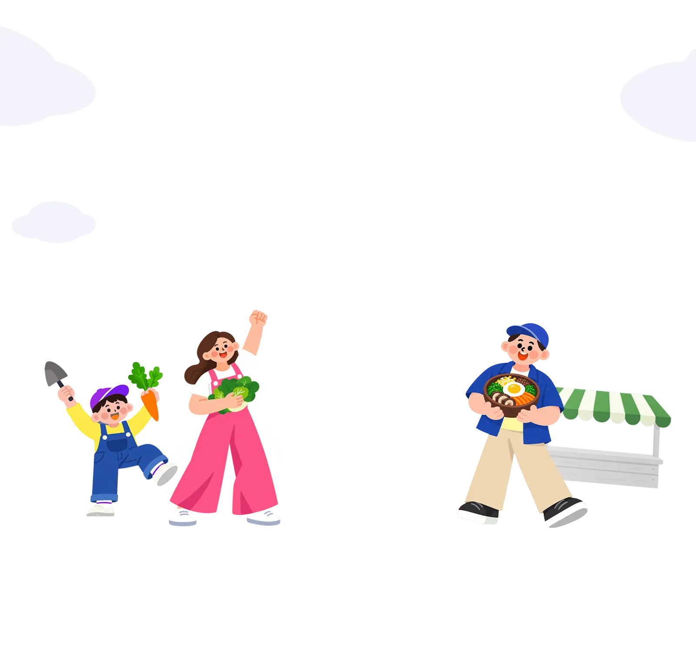

2026 광주 도시농부 축제



도시 한복판에서 농부가 된다면?
멀리 갈 필요 있나요?
“베란다에 상추나 키워볼까?” 고민하는 도시인 여러분.
도심 한복판에서 진짜 농부를 체험할 수 있는 축제가 열립니다.
2026 광주 도시농부 축제에 어서 오세요.
누구나 시작하는 도시농업
오늘, 도시에서 농부할래?🥕
전남광주통합특별시가 광주청사 잔디광장에서
2026 광주 도시농부 축제를 열어요. 농사를 몰라도 괜찮아요.
주제가 ‘누구나 시작하는 도시농업’이니까요.
- 일시
- ~
- 장소
- 광주청사 내 잔디광장 일원
이런 분은 꼭 가보세요
01텃밭정원존
베란다 텃밭이 궁금하다면
도시농업 전문가에게 1 대 1 맞춤교육을 받아보세요. 텃밭정원존과 도시농부 포토존을 추천합니다.

- 행복가족텃밭정원
- 공동체텃밭정원
- 지구사랑 업사이클링 텃밭정원
- 텃밭정원치유
02도시농부체험존
집에 식물 하나 들이고 싶다면
도시농부체험존이 정답입니다. 직접 만드는 반려식물 체험이 있어요.
반려식물, 상추 화분, 허브미스트, 커피박 키링을 직접 만들며 도시농부가 되어보세요.
- 반려식물
- 상추 화분
- 허브미스트
- 커피박 키링
03텃밭요리장터존
먹짱 도시농부를 꿈꾼다면
텃밭요리장터존과 향기로운 차 나눔에 참여하세요.
 AI 생성 이미지
AI 생성 이미지텃밭채소 덮밥  AI 생성 이미지
AI 생성 이미지텃밭채소 부침개  AI 생성 이미지
AI 생성 이미지텃밭채소 튀김
텃밭채소 덮밥, 텃밭채소 부침개, 텃밭채소 튀김에 다회용 컵을 지참하면
따뜻한 허브티까지 드려요.
04도시농업 세미나
요즘 ‘치유’가 관심이세요?
24·25일 열리는 도시농업 세미나에 참여하세요.
| ~ | ~ |
|---|---|
|
|
같은 날 열리는 광주김치축제
05광주김치축제
김치축제 가는 길인 분
2026 광주 도시농부 축제는 광주김치축제와 같은 기간·같은 장소에서 열려요.
두 축제를 모두 즐기면 일석이조 즐거움!


출처: 광주김치축제
06색다른 구경
색다른 구경을 하고 싶은 분
중앙아시아 다문화가정 프리마켓, 농악놀이, 추수감사 음악회, 농특산물을 판매하는 도농상생존까지 모두 만나보세요.
중앙아시아 다문화가정
프리마켓농악놀이 추수감사 음악회 도농상생존